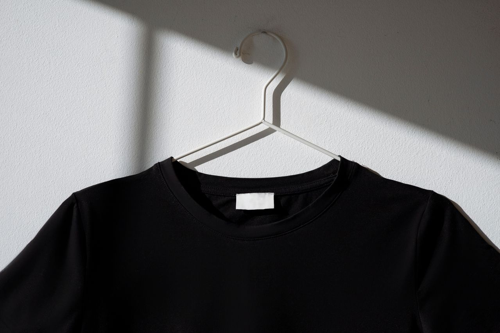

Clothing is a high-margin, high-competition category in global e-commerce. Winning in this space takes more than style; it requires strategy. A direct-to-consumer (DTC) website gives you full control over your brand, pricing, and customer data. It also allows for higher margins compared to third-party platforms. But it comes with higher demands on planning and execution. This guide will explain how to make a clothing brand website from the ground up. It breaks the process into three clear phases—market strategy, website setup, and marketing, so you can build a brand that lasts, not just a store that sells

\